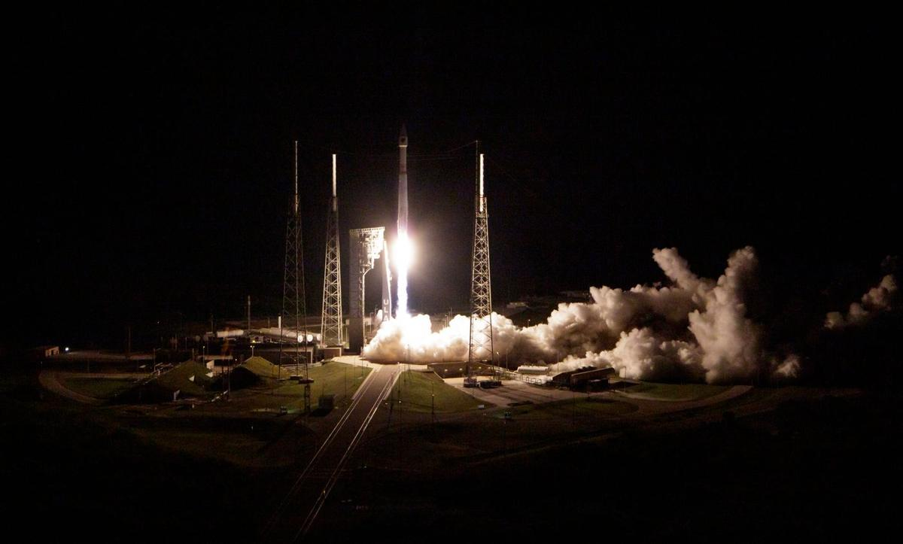

Space solutions

Orbital Data Centers
Compute moved off Earth: AI chips on satellites, powered by solar and cooled by radiating heat into space, so they do not use water-cooling towers. Starcloud put the first NVIDIA H100 in orbit in November 2025. Google's Project Suncatcher flew four TPUs on 1 October 2026. The Five W's are on the Orbital Data Centers page.
What are the Orbital Data Centers Five W's and impact statement?

Astroscale
On-orbit servicing company founded in 2013. ADRAS-J, phase one of JAXA's debris-removal demonstration, approached a discarded H-2A upper stage to about 15 meters in November 2024 and photographed it. ADRAS-J2 is phase two: return to that same rocket body, grapple it with a robotic arm, and deorbit it. It is contracted, not flown. Launch is targeted for fiscal 2027.

ClearSpace
A Swiss in-orbit servicing company leading Europe's first active debris removal mission, ClearSpace-1, commissioned by ESA to capture and deorbit the retired PROBA-1 satellite, targeted for 2028 (ESA lists 2029). Their PRELUDE mission, planned for June 2027, will validate rendezvous tech first.

Space Disposal
The hub for missions that capture dead rockets and satellites and bring them down to burn up, led by ADRAS-J2 (fiscal 2027) and ClearSpace-1. Part of Project R.

Planetary Defense
The hub for finding asteroids early and proving we can move them: ESA's Hera (arriving November 2026), NASA's NEO Surveyor, Webb's work on asteroid 2024 YR4, and Jupiter, the natural shield.